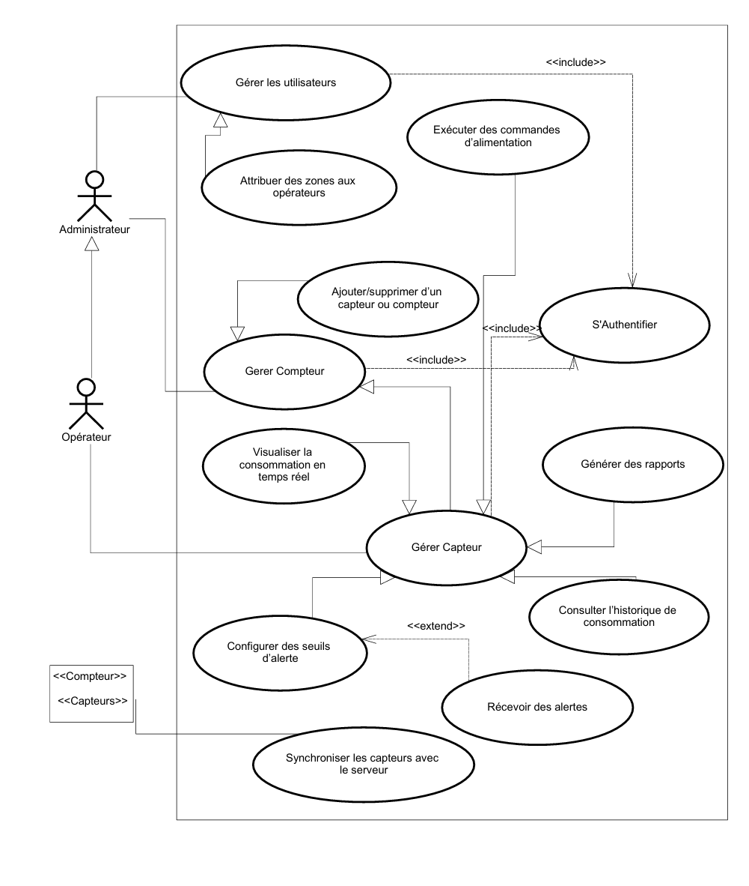
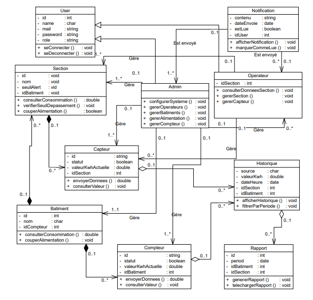
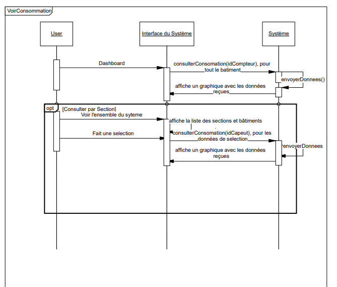
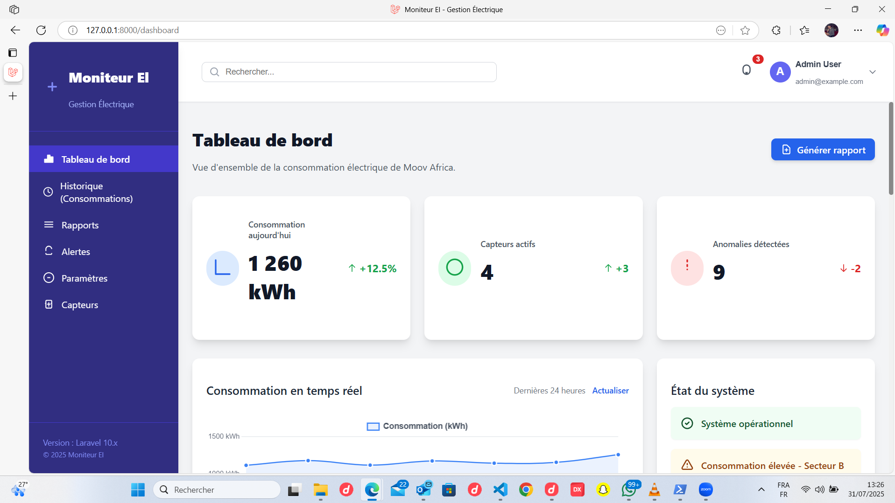
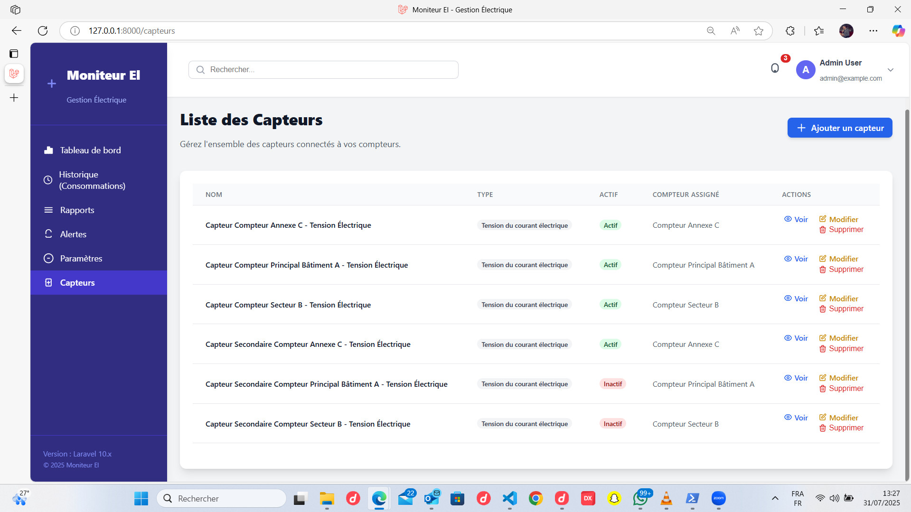
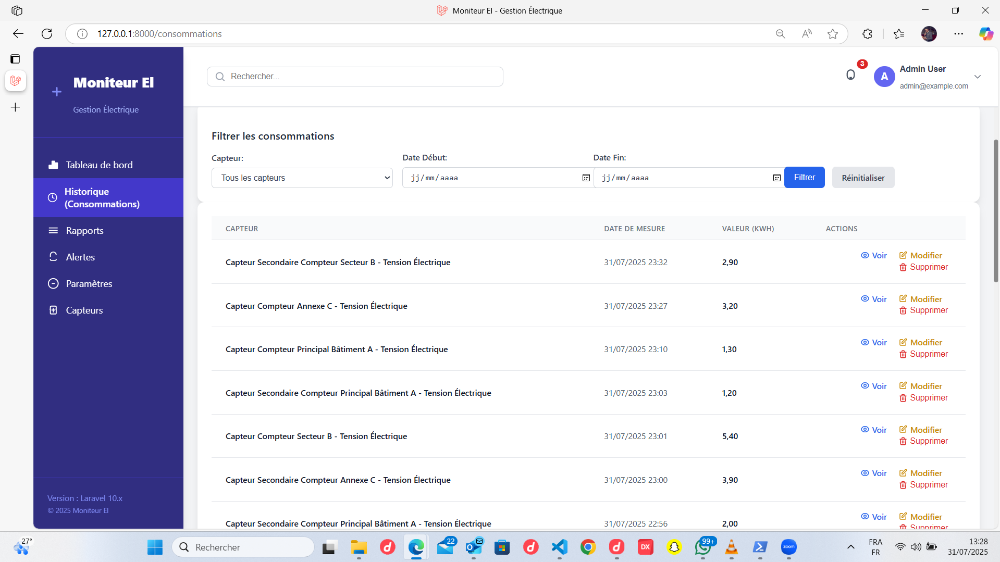

Plateforme de gestion de la consommation électrique en entreprise
Présenté par : KABORE Nebyinga Jures Orix Nickèz
Encadrant : Charles TRAORE - Professeur de suivi
Encadrant : Boubacar KEITA - Maitre de stage
Année Académique : 2022-2023
Contexte, problématique et solution proposée.
La gestion de l'énergie électrique est cruciale pour les entreprises, car une mauvaise maîtrise entraîne des coûts élevés et un fort gaspillage. Au Burkina Faso, malgré les progrès de l'accès à l'électricité, les ressources restent limitées et les infrastructures fragiles. En 2023, la SONABEL a publié une liste d'organisations — publiques et privées — lourdement endettées, certaines comptaient des centaines de millions de francs CFA. Cet épisode a révélé les faiblesses dans le suivi de consommation et posé une question essentielle : comment une entreprise peut-elle optimiser sa consommation si elle ne la surveille pas, voire la maîtriser en temps réel ?
Comment ONATEL-SA peut-elle concevoir et mettre en place un système de gestion permettant de suivre en temps réel la consommation électrique, de détecter les anomalies, et de disposer de données fiables en vue d'une optimisation énergétique à la fois économique et environnementale ? ?
Développement d'une plateforme web pour la surveillance en temps réel et l'analyse des données de consommation.
Feuille de route de notre soutenance, détaillant les étapes clés de notre projet.
Contexte, problématique et solution.
Définition des objectifs.
Démarche projet et modélisation du système.
Diagrammes de Cas d'utilisation, Séquences, Classes.
Technologies de developpement, backend, frontend et outils de développement.
Maquettes UI et aperçu fonctionnel de l'application.
Estimation budgétaire du projet via la consultation d'experts.
Bilan du projet, impacts et orientations futures.
Mettre en place un système intelligent et automatisé, pour la gestion de la consommation électrique au sein de ONATEL-SA.
Nous avons suivi une approche structurée pour la conception du système.
La méthode 2TUP (Two-Track Unified Process) a guidé l'ensemble de notre projet, de la phase d'analyse des besoins à la conception détaillée.
StarUML a été l'outil central pour la modélisation, nous permettant de visualiser et de structurer le système.
Fonctionnalités des acteurs "Admin" et "Superviseur".
Structure des classes : `User`, `Compteur`, `DonneeConsommation`, `Alerte`.
Exemple : Séquence de la vue de la consommation.
Schéma SQL déduit des fichiers de seeder pour les tables principales.
--
-- Table `users`
--
CREATE TABLE `users` (
`id` BIGINT UNSIGNED NOT NULL AUTO_INCREMENT,
`name` VARCHAR(255) NOT NULL,
`email` VARCHAR(255) NOT NULL UNIQUE,
`password` VARCHAR(255) NOT NULL,
`role` VARCHAR(50) NOT NULL DEFAULT 'superviseur',
`created_at` TIMESTAMP NULL DEFAULT NULL,
`updated_at` TIMESTAMP NULL DEFAULT NULL,
PRIMARY KEY (`id`)
) ENGINE=InnoDB DEFAULT CHARSET=utf8mb4;
--
-- Table `compteurs`
--
CREATE TABLE `compteurs` (
`id` BIGINT UNSIGNED NOT NULL AUTO_INCREMENT,
`nom` VARCHAR(255) NOT NULL,
`emplacement` VARCHAR(255) NOT NULL,
`type` VARCHAR(50) NOT NULL,
`created_at` TIMESTAMP NULL DEFAULT NULL,
`updated_at` TIMESTAMP NULL DEFAULT NULL,
PRIMARY KEY (`id`)
) ENGINE=InnoDB DEFAULT CHARSET=utf8mb4;
--
-- Table `capteurs`
-- Note: This table is inferred from the `ConsommationSeeder`
--
CREATE TABLE `capteurs` (
`id` BIGINT UNSIGNED NOT NULL AUTO_INCREMENT,
`nom` VARCHAR(255) NOT NULL,
`compteur_id` BIGINT UNSIGNED NOT NULL,
`created_at` TIMESTAMP NULL DEFAULT NULL,
`updated_at` TIMESTAMP NULL DEFAULT NULL,
PRIMARY KEY (`id`),
FOREIGN KEY (`compteur_id`) REFERENCES `compteurs` (`id`) ON DELETE CASCADE
) ENGINE=InnoDB DEFAULT CHARSET=utf8mb4;
--
-- Table `consommations`
--
CREATE TABLE `consommations` (
`id` BIGINT UNSIGNED NOT NULL AUTO_INCREMENT,
`capteur_id` BIGINT UNSIGNED NOT NULL,
`date_mesure` TIMESTAMP NOT NULL,
`valeur` DECIMAL(10,2) NOT NULL,
`created_at` TIMESTAMP NULL DEFAULT NULL,
`updated_at` TIMESTAMP NULL DEFAULT NULL,
PRIMARY KEY (`id`),
FOREIGN KEY (`capteur_id`) REFERENCES `capteurs` (`id`) ON DELETE CASCADE
) ENGINE=InnoDB DEFAULT CHARSET=utf8mb4;
--
-- Table `alertes` (optional, based on a previous version of the schema)
--
CREATE TABLE `alertes` (
`id` BIGINT UNSIGNED NOT NULL AUTO_INCREMENT,
`compteur_id` BIGINT UNSIGNED NOT NULL,
`message` TEXT NOT NULL,
`type_alerte` VARCHAR(255) NOT NULL,
`severite` VARCHAR(50) NOT NULL,
`resolved` BOOLEAN NOT NULL DEFAULT 0,
`created_at` TIMESTAMP NULL DEFAULT NULL,
`updated_at` TIMESTAMP NULL DEFAULT NULL,
PRIMARY KEY (`id`),
FOREIGN KEY (`compteur_id`) REFERENCES `compteurs` (`id`) ON DELETE CASCADE
) ENGINE=InnoDB DEFAULT CHARSET=utf8mb4;
Illustration de l'environnement physique et des nœuds du système, depuis les compteurs jusqu'au serveur.
Les technologies au cœur de notre solution, pour un système robuste et performant.
Aperçu des interfaces de la plateforme et structure des données de simulation.
Vue d'ensemble de la consommation en temps réel.
Interface pour ajouter, modifier ou supprimer des capteurs.
Visualisation des données passées pour l'analyse.
Pour la démonstration, nous avons simulé des données de consommation en utilisant la structure JSON suivante. Ce format a été choisi pour sa flexibilité et sa facilité de traitement par l'application web.
[
{
"id": 1,
"capteur_id": 1,
"date_mesure": "2023-08-01T10:00:00.000000Z",
"valeur": 15.5,
"created_at": "2023-08-01T10:00:00.000000Z",
"updated_at": "2023-08-01T10:00:00.000000Z",
"capteur": {
"id": 1,
"nom": "Capteur Principal Bâtiment A",
"compteur_id": 1,
"created_at": "2023-08-01T08:00:00.000000Z",
"updated_at": "2023-08-01T08:00:00.000000Z"
}
},
{
"id": 2,
"capteur_id": 2,
"date_mesure": "2023-08-01T10:15:00.000000Z",
"valeur": 4.2,
"created_at": "2023-08-01T10:15:00.000000Z",
"updated_at": "2023-08-01T10:15:00.000000Z",
"capteur": {
"id": 2,
"nom": "Capteur Secteur B",
"compteur_id": 2,
"created_at": "2023-08-01T08:00:00.000000Z",
"updated_at": "2023-08-01T08:00:00.000000Z"
}
}
]Lien copié !
Estimation budgétaire du projet via la consultation structurée d'experts, placée en fin de projet.
Nous avons à ce niveau eu à faire une consultation approfondie de devis de projet similaire de GO AI corporation dont nous sommes meùbre, en plus d'une dizaine d'appels d'offres gouvernementales pour des projets en développement et gestion de projet similaire.
Dans cette phase nous avons rassemblé les données de la première phase pour recuperer des avis nouveaux dans le but de converger vers une estimation objective.
La définition d'une estimation de coût finale, validée par l'ensemble des experts consultés dans la phase 2, nous à donné la moyenne de 1 650 000 F cfa, Coût defeni comme capex pour notre projet. En incluant donc les réccurente pour sa viabilité, nous avons un total de 1 908 000 F CFA.
Analyse des bénéfices financiers et stratégiques de la mise en œuvre de la plateforme.
Mise en place de mesures pour garantir l'intégrité et la confidentialité des données.
Analyse des contraintes et des compromis que nous avons dû considérer.
Le projet a atteint ses objectifs en offrant une solution concrète pour la gestion énergétique. La plateforme permet une prise de décision basée sur des données, conduisant à des économies substantielles et une efficacité accrue.
Pour l'avenir, nous envisageons d'intégrer un module de prédiction de consommation basé sur l'IA, de développer une application mobile dédiée pour rendre on ne peut plus disponnible l'accès à l'information.